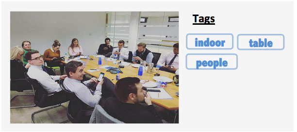
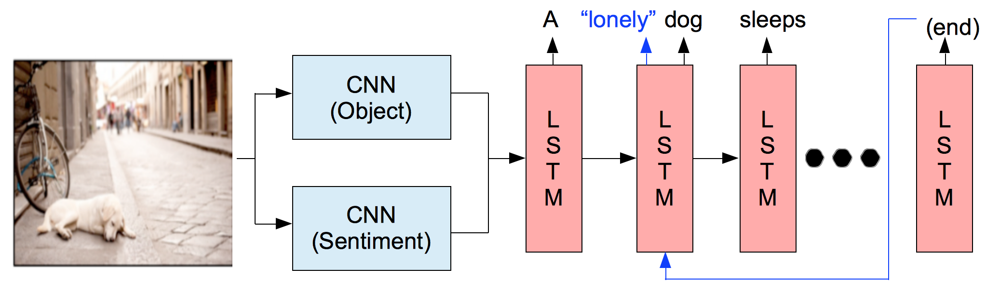

True-Negative Label Selection for Large-Scale Multi-Label Learning
Atsushi Kanehira Andrew Shin, Tatsuya Harada
International Conference on Pattern Recognition (ICPR 2016) [pdf]

Beyond Caption To Narrative: Video Captioning with Multiple Sentences
Andrew Shin, Katsunori Ohnishi, Tatsuya Harada
IEEE International Conference on Image Processing (ICIP 2016) [pdf]

Image Captioning with Sentiment Terms via Weakly-Supervised Sentiment Dataset
Andrew Shin, Yoshitaka Ushiku, Tatsuya Harada
British Machine Vision Conference (BMVC 2016) [pdf]

Context-Dependent Automatic Response Generation Using Statistical Machine Translation Techniques
Andrew Shin, Ryohei Sasano, Hiroya Takamura, Manabu Okumura
North American Chapter of the Association for Computational Linguistics (NAACL 2015) [pdf]